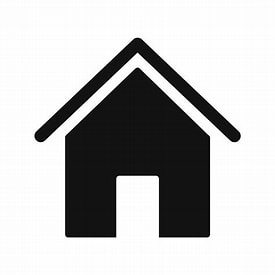

More about me
My full name is Antonio Olivera y Perez born in Belgium from a Spanish father and Belgian mother.
I am married with 2 kids.
Most of my life I worked and lived in Belgium, but have now moved to Spain with the entire family.
Contact Me
Email: aoliverayperez@gmail.com
Phone: +34 656 27 49 97